화학분석기사(구) (2011-03-20 기출문제)
1과목: 일반화학
1. 다음 각 쌍의 2개 물질 중에서 물에 더욱 잘 녹을 것이라고 예상되는 물질을 1개씩 옳게 선택한 것은?
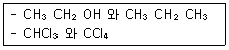
- CH3CH2OH, CHCl3
- CH3CH2OH, CCl4
- CH3CH2CH3, CHCl3
- CH3CH2CH3, CCl4
(정답률: 80%)

2. 화학식의 이름이 틀린 것은?
- HClO : 하이포아염소산
- HBrO3 : 브로민산
- H2SO4 : 황산
- Ca(ClO)2 : 염소산칼슘
(정답률: 62%)
3. alkene 에 해당하는 것은?
- C6H14
- C6H12
- C6H10
- C6H6
(정답률: 81%)
4. 79.59g Fe 와 30.40g O 를 포함하고 있는 시료 화합물의 실험식은? (단, Fe 의 몰질량은 55.85g, O의 몰질량은 16.00g 이다.)
- FeO2
- Fe3O5
- Fe3O4
- Fe2O4
(정답률: 75%)
5. 슈크로오스(C12H22O11) 684g 을 물에 녹여 전체부피를 4.0L 로 만들었을 때 이 용액의 몰농도(M)는?
- 0.25
- 0.50
- 0.75
- 1.00
(정답률: 76%)
6. 단위를 틀리게 연결한 것은?
- 전하량 - coulomb(C)
- 전류 - ampere(A)
- 전위 - volt(V)
- 에너지 - watt(W)
(정답률: 83%)
7. 다음 물질의 산 해리상수 Ka 값이 다음과 같을 때, 다음 중 산의 세기가 가장 큰 것은?
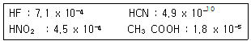
- HF
- HCN
- HNO2
- CH3COOH
(정답률: 77%)
8. 시트르산(citric acid)은 몇 개의 카복실기(carboxyl) 작용기를 갖고 있는가?
- 0개
- 1개
- 2개
- 3개
(정답률: 63%)
9. 질량백분율이 37% 인 염산의 몰농도는 약 얼마인가?(단, 염산의 밀도는 1.188g/mL 이다.)
- 0.121M
- 0.161M
- 12.1M
- 16.1M
(정답률: 73%)
10. 포름산(HCOOH)의 이온화 상수는(Ka)는 1.80 x 10-4 이다. 0.001M의 포름산 용액에는 포름산 약 몇 % 가 이온화되어 있는가?
- 4.2
- 34
- 82
- 88
(정답률: 36%)
11. 주기율표에 대한 일반적인 설명 중 가장 거리가 먼 것은?
- 주기율표는 원자번호가 증가하는 순서로 원소를 배치한 것이다.
- 세로열에 있는 원소들이 유사한 성질을 가진다.
- 1족 원소를 알칼리금속이라고 한다.
- 2족 원소를 전이금속이라고 한다.
(정답률: 84%)
12. 다음 원소 중에서 전자친화도가 가장 큰 원소는?
- Li
- B
- Be
- O
(정답률: 80%)
13. 아스파탐(C14H18N2O5) 7.3g 에 들어있는 질소 원자의 개수는 약 얼마인가?
- 3.0 x 1022
- 1.5 x 1022
- 7.5 x 1022
- 3.7 x 1022
(정답률: 50%)
14. 다음 산화환원반응에 대한 설명으로 옳은 것은?
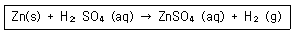
- 아연의 산화수는 0에서 +2로 2개의 전자를 얻어 산화된다.
- 수소는 1개의 전자를 잃고 환원된다.
- 아연은 환원제이다.
- 수소는 환원제이다.
(정답률: 70%)
15. 이소프로필알코올(isopropyl alcohol)을 옳게 나타낸 것은?
- CH3-CH2-OH
- CH3-CH(OH)-CH3
- CH3-CH(OH)-CH2-CH3
- CH3-CH2-CH2-OH
(정답률: 81%)
16. 다음 구조의 이름은 무엇인가?
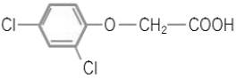
- 1,3-디클로로벤젠 아세트산
- 1-옥시 아세트산 2,4-클로로벤젠
- 2,4-클로로 페닐 아세트산
- 2,4-디클로로펜옥시 아세트산
(정답률: 59%)
17. N 의 산화수가 +4 인 것은?
- HNO3
- NO2
- N2O
- NH4Cl
(정답률: 82%)
18. 다음 중 비극성 공유결합을 하는 것은?(오류 신고가 접수된 문제입니다. 반드시 정답과 해설을 확인하시기 바랍니다.)
- 황화수소
- 산소
- 염화수소
- 이산화황
(정답률: 66%)
19. 다음 중 화합물의 실험식량이 가장 작은 것은?
- C14H8O4
- C10H8OS3
- C15H12O3
- C12H18O4N
(정답률: 77%)
20. 유기화합물의 작용기 구조를 나타낸 것 중 틀린 것은?
- 케톤 :
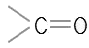
- 아민 :
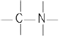
- 알데히드 :
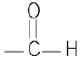
- 에스테르 :
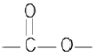
(정답률: 71%)
2과목: 분석화학
21. 농도의 크기를 작은 값부터 큰 순서대로 옳게 표현한 것은?
- 1ppb ＜ 1ppt ＜ 1ppm
- 1ppt ＜ 1ppb ＜ 1ppm
- 1ppb ＜ 1ppm ＜ 1ppt
- 1ppm ＜ 1ppb ＜ 1ppt
(정답률: 64%)
22. 무게분석을 위하여 침전된 옥살산칼슘(CaC2O4)을 무게를 아는 거름도가니로 침전물을 거르고, 건조시킨 다음 붉은 불꽃으로 가열한다면 도가니에 남는 고체성분은 무엇인가?
- CaC2O4
- CaCO2
- CaO
- Ca
(정답률: 68%)
23. 다음 표에서 약 염기성 용액을 강산 용액으로 적정할 때 적합한 지시약과 적정이 끝난 후 용액의 색깔을 옳게 나타낸 것은?
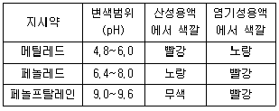
- 메틸레드, 빨강
- 메틸레드, 노랑
- 페놀프탈레인, 빨강
- 페놀레드, 빨강
(정답률: 76%)
24. EDTA 에 대한 설명으로 틀린 것은?
- EDTA 는 금속이온의 전화와는 무관하게 금속 이온과 일정비율로 결합한다.
- EDTA 적정법은 물의 경도를 측정할 때 사용할 수 있다.
- EDTA 는 Li+, Na+, K+ 와 같은 1가 양이온들 하고만 착물을 형성한다.
- EDTA 적정시 금속-지시약 착화합물은 금속-EDTA 착화합물보다 덜 안정하다.
(정답률: 74%)
25. 250Gbyte는 50Mbyte 의 몇 배인가?
- 50배
- 500배
- 5000배
- 50000배
(정답률: 76%)
26. pKa = 4.76 인 아세트산 수용액의 pH가 4.76일 때
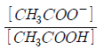
의 값은 얼마인가?- 0.18
- 0.36
- 0.50
- 1.00
(정답률: 77%)
27. 20.00mL 의 0.1000M Mg2+를 0.1000M Cl- 로 적정하고자한다. Cl-를 40.00mL 첨가하였을 때, 이 용액 속에서 Hg22+의 농도는 약 얼마인가?(단, Hg2Cl2(s) ⇄ Hg22+(aq) + 2Cl-(aq), Ksp = 1.2 x 10-18이다.)
- 7.7 x 10-5M
- 1.2 x 10-6M
- 6.7 x 10-7M
- 3.3 x 10-10M
(정답률: 49%)
28. 다음과 같이 구성된 전지의 측정된 전압이 25℃에서 1.⑤V 이었다. E0cell = 0.80V 일 때, 백금 전극이 담긴 용액의 pH 값은? (단, Ag+(aq) + e- → Ag(s) E0 = 0.80 V)
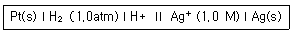
- 2.1
- 3.2
- 4.2
- 8.4
(정답률: 38%)
29. 전하를 띠지 않는 중성분자들은 이온세기가 0.1M 보다 작을 경우 활동도 계수(activiity coefficient)를 얼마라고 할 수 있는가?
- 0
- 0.1
- 0.5
- 1
(정답률: 74%)
30. 미지 시료 중의 Hg2+ 이온을 정량하기 위하여 과량의 Mg(EDTA)2-를 가하여 잘 섞은 다음 유리된 Mg2+ EDTA 표준 용액으로 적정할 수 있다. 이 때 금속-EDTA 착물 형성 상수(Kf : formation constant)의 비교와 적정법의 이름이 옳게 연결된 것은?
- Kf,Hg ＞ Kf,Mg : 간접 적정(indirect titration)
- Kf,Hg ＞ Kf,Mg : 치환 적정(displacement titration)
- Kf,Mg ＞ Kf,Hg : 간접 적정(indirect titration)
- Kf,Mg ＞ Kf,Hg : 치환 적정(displacement titration)
(정답률: 60%)
31. 요오드 적정법에서 일반적으로 사용하는 시약으로서 요오드와 반응하여 짙은 청색을 발현하는 것은?
- 페놀프탈레인
- 브로모크레졸 그린
- 에리오크롬 블랙 T
- 녹말(starch)
(정답률: 76%)
32. 중크롬산 적정에 대한 설명으로 틀린 것은?
- 중크롬산 이온이 분석에 응용될 때 초록색의 크롬(Ⅲ) 이온으로 환원된다.
- 중크롬산 적정은 일반적으로 염기성 용액에서 이루어진다.
- 중크롬산칼륨 용액은 안정하다.
- 시약급 중크롬산칼륨은 순수하여 표준용액을 만들 수 있다.
(정답률: 63%)
33. 자유에너지 △G0 와 평형상수 K 사이의 관계에 대한 설명으로 옳은 것은?
- △G0 와 K 는 서로 관계가 없다.
- △G0 가 양수이면, K 는 1보다 작다.
- △G0 가 음수이면, K 는 0 보다 작다.
- △G0 가 음수이면, K 는 0 과 1 사이의 값을 갖는다.
(정답률: 67%)
34. 0.⑤0mol 트리스와 0.⑤0mol 트리스 염화수소를 녹여 만든 500mL 용액의 pH 는? (단, pKa(BH+ ) = 8.075 이다. )
- 1.075
- 5.0
- 7.5
- 8.075
(정답률: 73%)
35. 난용성 염 포화용액 성분의 M+ 와 Ax-를 포함하는 용액에서 두 이온의 농도 곱을 용해도곱(용해도적, solubility product : Ksp)이라고 한다. 이 값은 온도가 일정하면 항상 일정한 값을 갖는다. 이 때 [My+]x와 [Ax-]y의 곱이 Ksp보다 클 때 용액에서 나타나는 현상은?
- 농도곱이 Ksp와 같아질 때까지 침전한다.
- 농도곱이 Ksp와 같아질 때까지 용해된다.
- Ksp와 무관하게 항상 용해되어 침전하지 않는다.
- 주어진 용액의 상태는 포화이므로 침전하지 않는다.
(정답률: 74%)
36. HClO4 와 HCl 에 대한 설명 중 틀린 것은?
- HClO4 와 HCl 모두 강산이다.
- HClO4 이 HCl 보다 더 센 산이다.
- 수용액에서는 평준화 효과로 HClO4 와 HCl 의 산의 세기를 명확히 구별할 수 있다.
- 아세트산에서 HClO4 와 HCl 의 산의 세기가 다르게 나타난다.
(정답률: 51%)
37. La3+ 이온을 포함하는 미지시료 25.00mL를 옥살산나트륨으로 처리하여 La2(C2O4)3 의 침전을 얻었다. 침전 전부를 산에녹여 0.004321M 농도의 과망간산칼륨 용액 12.34mL 로 적정하였다. 미지시료에 포함된 La3+ 의 몰 농도는 몇 mM인가?
- 0.3555
- 1.255
- 3.555
- 12.55
(정답률: 37%)
38. 1.0M Na3PO4의 이온 세기는?
- 2.0M
- 4.0M
- 6.0M
- 8.0M
(정답률: 67%)
39. Cd2+ 와 Pb2+ 가 혼합된 분석 물질내의 Pb2+ 의 양을 EDTA 적정법으로 구해 내고자 할 때, CN-를 첨가하면 Cd2+에 방 해 받지 않고 적정을 수행 할 수 있다. 이 때 첨가해주는 CN- 과 같은 시약을 무엇이라 하는가?
- 보조착화제
- 금속 이온 지시약
- 킬레이트제
- 가리움제
(정답률: 61%)
40. 적정에 관한 용어의 설명으로 틀린 것은?
- 종말점(ending point)은 분석물질과 적정액이 정확하게 화학 양론적으로 가해진 점이다.
- 당량점(equivalent point)과 종말점의 차이를 적정오차(titration error)라고 한다.
- 적정은 분석물과 시약 사이의 반응이 완전하게 연결되었다고 판단될 때 까지 표준시약을 가하는 과정이다.
- 역적정은 분석물질에 농도를 알고 있는 첫 번째 표준시약을 과량 가해 반응시키고, 두 번째 표준시약을 가하여 첫 번째 표준시약의 과량을 적정하는 방법이다.
(정답률: 67%)
3과목: 기기분석I
41. 바닷물 등 매트릭스 농도가 높은 시료 내에, Uranium 등의 극미량 시료들을 ICP를 광원으로 한 장치를 이용하여 측정하고자 할 때, 최상의 감도 및 안정도를 갖기 위하여 최적화를 한다. 다음 설명 중 틀린 것은?
- 시료의 농도가 낮을 경우, 시료전처리 시 농축을 하여 측정하면 감도향상을 기할 수 있다.
- 분광학적 간섭이 커서 고분해능의 파장선택장치가 필요하다.
- 최적화 시킨 후, 감도를 높이기 위하여 시료의 도입속도를 증가시킨다.
- 알칼리 금속 등 매트릭스에 의한 영향이 불꽃원자화장치보다는 상대적으로 적다.
(정답률: 73%)
42. 원자방출분광법에서 내부표준물법을 사용한 다음의 데이터를 이용하였다. 미지시료 내 납의 농도(Cx)는 약 몇 ㎍/mL 인가?
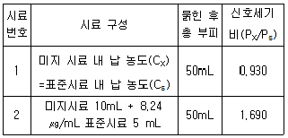
- 0.749
- 1.497
- 7.49
- 8.24
(정답률: 39%)
43. 원자스펙트럼의 선넓힘을 일으키는 요인이 아닌 것은?
- 온도
- 압력
- 자기장
- 에너지준위
(정답률: 64%)
44. 유도결합플라스마 분광기에 사용되는 Rowland circle을 이용한 다색화분광기(polychromators)에 대한 설명이 아닌 것은?
- 오목 회절발을 사용한다.
- 회절발과 프리즘을 함께 사용하여 2차원의 평면상에서 스펙트럼선들을 측정한다.
- 스펙트럼선의 선정에 있어서 순차측정기기(sequential instrument) 보다 제한을 받는다.
- 검출기로는 주로 광전증배 관(photomultiplier tube)을 사용한다.
(정답률: 42%)
45. 원자 흡수 분광법에서의 방해요인 중 화학적 방해 요인이 아닌것은?
- 낮은 휘발성 화합물 생성
- 해리반응
- 이온화
- 스펙트럼 방해
(정답률: 65%)
46. 원자흡수분광법에서 사용하는 칼슘분석에서 인산이온의 방해를 최소화하기 위하여 과량의 스트론튬이나 란탄을 사용한다. 이때 사용되는 스트론튬이나 란탄을 무엇이라 하는가?
- 보호제
- 해방제
- 이온화 억제제
- 흡수제
(정답률: 63%)
47. 내부 표준물 첨가법을 사용하여야 가장 좋은 결과를 얻는 경우는 무엇인가?
- 시료의 조성이 잘 알려져 있지 않은 경우
- 시료의 조성이 복잡하여 매트릭스의 영향이 큰 경우
- 시료중의 일부 성분이 분석신호에 영향을 줄 경우
- 기기의 감응이 자주 변할 경우
(정답률: 43%)
48. 적외선흡수분광기기에 사용되는 광원이 아닌 것은?
- 글로바(Globar : silicon carbide rod)
- Nernst Glower
- Tungsten filament lamp
- Deuterium lamp
(정답률: 52%)
49. 용액 중에 산소가 용해되어 있는 경우 형광의 세기가 감소하게 된다. 이와 관련이 있는 비활성 과정은?
- 진동이완
- 내부전환
- 유발분해
- 계간전이
(정답률: 63%)
50. 형광 및 인광에 영향을 주는 인자로서 가장 거리가 먼 것은?
- 양자수득률
- 분자의 구조적 강도
- 전이형태
- 투과빛살
(정답률: 58%)
51. X선 분광법에서 복사선 에너지를 전기신호로 변환시키는 검출기가 아닌 것은?
- 기체-충전변환기
- 섬광계수기
- 광전증배관
- 반도체변환기
(정답률: 70%)
52. 광원의 세기를 변화시킬 수 있는 형광분광계에서 시료의 형광 세기를 측정하니 눈금이 0.9를 나타내었다. 이 형광 분광계에서 광원의 세기를 원래의 2/3으로 하고 같은 시료의 농도를 1.5배로 할 때, 형광세기를 나타내는 눈금을 옳게 예측한 것은?(단, 나머지 조건은 동일하며 시료 농도는 충분히 묽다고 가정한다.)
- 6.0
- 9.0
- 13.5
- 20.3
(정답률: 57%)
53. Monochromator의 slit width를 증가하였을 때 발생되는 현상으로 가장 옳은 것은?
- resolution이 감소한다.
- peak width가 좁아진다.
- 빛의 세기가 감소한다.
- grating 효율도가 증가한다.
(정답률: 65%)
54. 다음 검출기 중 자외선/가시광선(UV/VIS) 스펙트럼선에 감응하지 않는 것은?
- 광전증배 관(photomultiplier tube)
- 볼로미터(bolometer)
- 광다이오드 배열(photodiode array)
- 전하 이동 장치(charge-transfer device)
(정답률: 60%)
55. 레이저발생 메커니즘에 대한 설명 중 옳은 것은?
- 레이저를 발생하게 하는데 필요한 펌핑을 레이저활성 화학종이 전기방전, 센 복사선의 쪼여줌 등과 같은 방법에 의해 전자의 에너지준위를 바닥상태로 전이시키는 과정이다.
- 레이저발생의 바탕이 되는 유도방출은 들뜬 레이저 매질의 입자가 자발방출하는 광자와 정확하게 똑같은 에너지를 갖는 광자에 의하여 충격을 받는 경우이다.
- 레이저에서 빛살증폭이 일어나기 위해서는 유도방출로 생긴 광자수가 흡수로 잃은 광자수보다 적을 필요가 있다.
- 3단계 또는 4단계 준위 레이저 발생계는 레이저가 발생하는 데 필요한 분포상태반전(population inversion)을 달성하기 어렵기 때문에 빛살증폭이 일어나기 어렵다.
(정답률: 58%)
56. 안쪽 궤도함수의 전자가 여기상태로 전이할 때 흡수하는 복사선은?
- 초단파
- 적외선
- 자외선
- X선
(정답률: 70%)
57. NMR 스펙트럼의 1차 스펙트럼 해석에 대한 규칙의 설명으로 틀린 것은?
- 동등한 핵들은 다중 흡수 봉우리를 내주기 위하여 서로 상호작용하지 않는다.
- 짝지움 상수는 네 개의 결합길이보다 큰 거리에서는 짝지움이 거의 일어나지 않는다.
- 띠의 다중도는 이웃 원자에 있는 자기적으로 동등한 양성자의 수(n)에 의해 결정되며, n으로 주어진다.
- 짝지움 상수는 가해준 자기장에 무관하다.
(정답률: 61%)
58. Fourier 변환 분광기에서 0.2cm-1 의 분해능을 얻으려면 거울이 움직여야 하는 거리는 몇 cm 가 되어야 하는다?
- 0.25
- 2.5
- 5
- 10
(정답률: 46%)
59. TMS(Tetramethylsilane)은 핵자기공명(NMR)분광법에서 기준 물질로서 가장 일반적으로 사용된다. 이에 대한 설명으로 옳지 않은 것은?
- Chemical shift 값은 0 ppm을 갖는다.
- 수소원자는 모두 12개가 존재하는데 모두 동일한 종류이기 때문에 단일한 Peak(Singlet)으로 나타난다.
- 가리움 효과가 크기 때문에 TMS 수소 원자는 다른 대부분 분자의 수소 원자보다 센 자기장(High Field)에서 peak가 나타난다.
- 활성이 커서 물을 비롯한 대부분의 유기 용매에 잘 녹아 상용이 편리하다.
(정답률: 48%)
60. 원자화 방법 중 불꽃 원자화 광원과 비교한 플라스마 원자화 광원의 장점에 대한 설명으로 가장 옳은 것은?
- 원자 및 분자 밀도가 높다.
- 원자화 온도가 높아 원자화 효율이 좋다.
- 전자 밀도가 낮다.
- 시료 원자가 플라스마 관찰 영역에 도달 할 때 체류시간이 짧다.
(정답률: 76%)
4과목: 기기분석II
61. 순환 전압-전류법(Cyclic voltammetry)에 대한 설명으로 틀린것은?
- 두 전극 사이에 정주사(forward scan) 방향으로 전위를 걸다가 역주사(Reverse scan) 방향으로 원점까지 전위를 낮춘다.
- 전압전극의 표면적이 같다면, 전류의 크기는 펄스차이 폴라로그래피 전류와 거의 같다.
- 가역반응에서는 양극봉우리 전류과 음극봉우리 전류가 거의 같다.
- 가역반응에서는 양극봉우리 전위와 음극봉우리 전위의 차이는 0.⑤92/n volt 이다.
(정답률: 65%)
62. 폴라로그래피에서 작업전극으로 주로 사용하는 전극은?
- 적하수은 전극
- 백금 전극
- 포화카로멜 전극
- 흑연 전극
(정답률: 67%)
63. 2.00mol 의 전자가 2.00V 전위하를 가진 전지를 통하여 이동할 때 행한 전기적인 일의 크기는 약 몇 J 인가? ( 단, Faraday 상수는 96500 C/mol 이다. )(오류 신고가 접수된 문제입니다. 반드시 정답과 해설을 확인하시기 바랍니다.)
- 193
- 386
- 483
- 965
(정답률: 62%)
64. 다음 중 질량분석계(mass spectrometer)의 이온화방법이 아닌 것은?
- 화학적 이온화(CI)
- 비행시간(Time Of Flight)법
- 전자 충격(EI)
- 빠른 원자충격(FAB)법
(정답률: 58%)
65. 이온 크로마토그래피에 대한 설명으로 틀린 것은?
- 양이온교환 수지에 교환되는 양이온의 교환반응상수는 그 전화와 수화된 이온 크기에 영향을 받는다.
- 음이온교환 수지에서 교환상수는 2가 음이온보다 1가 음이온이 더 적은 것이 일반적이다.
- 용리액 억제 칼럼은 용리 용매의 이온을 이온화가 억제된 분자화학종으로 변형시켜서 용리 전해질의 전기전도를 막아준다.
- 단일 칼럼 이온 크로마토그래피에서는 이온화 억제제를 칼럼에 정지상과 같이 넣어서 이온들을 분리한다.
(정답률: 54%)
66. 산성 용액에서 H2S(몰 질량 = 34.1g)는 전기량법으로 생성되는 I2를(몰 질량 = 254g)로 적정하여 분석할 수 있다. 시료 50.0mL에 KI를 충분량 넣은 후 50.0mA의 일정한 전류로 전기분해하여 적정하는데 784초가 걸렸다. 시료중의 H2S 의 농도는 몇 mg/mL 인가?(단, 페러데이 상수 F = 96485C/mol 이다.)
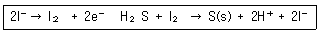
- 0.139
- 0.277
- 0.554
- 2.22
(정답률: 34%)
67. 시료물질과 기준물질을 조절된 온도프로그램으로 가열하면서 이 두 물질에 흘러 들어간 에너지 차이를 시료온도의 함수로 측정하는 열량분석법은?
- 시차주사열량법 (DSC)
- 열법 무게측정법 (TG)
- 시차열법 분석 (DTA)
- 직접 주사엔탈피법 (DIE)
(정답률: 73%)
68. 반쪽반응에서 반응물과 생성물의 분석농도비가 정확하게 1 이고 다른 용질의 몰농도가 규정될 때의 전극전위를 무엇이라고 하는가?
- 저항전위
- 형식전위
- 열역학전위
- 표준전극전위
(정답률: 46%)
69. 내부표준물법으로 크로마토그래피에서 미지물질 X의 농도를 밝히고자 다음과 같은 2번의 실험을 하였다. 첫 번째는 0.080M 의 X와 0.070M의 S인 혼합용액에서 얻은 크로마토그램 봉우리 넓이는 Ax=400 이고 As=360이었다. 두 번째는 X가 포함된 미지시료 10mL에 0.160M의 S 내부표준물 10mL를 첨가하고 크로마토그램을 얻었더니, 봉우리의 넓이는 Ax=520 이고 As=600이었다. 미지시료 중 X의 농도는 몇 M인가?
- 0.071
- 0.097
- 0.14
- 0.97
(정답률: 21%)
70. 불꽃이온화검출기(FID)에 대한 설명 중 틀린 것은?
- 연소하지 않는 기체는 감응도가 크다.
- 선형감응 범위가 107 정도로 넓다.
- CO2 는 분석이 불가능하다.
- 탄소원자의 수에 비례하여 감응한다.
(정답률: 45%)
71. 액체크로마토그래피에서 분석에서 분석하고자 하는 물질의 분자량이 5000 이하이고, 비극성-비수용성의 성질을 지니고 있을 때 가장 효과적으로 사용할 수 있는 방법으로서 이성질체, 동족체의 분리에 주로 사용되는 것은?
- 이온교환 크로마토그래피
- 분배 크로마토그래피
- 흡착 크로마토그래피
- 배제 크로마토그래피
(정답률: 41%)
72. 전위차 적정법에 대한 설명으로 틀린 것은?
- 서로 다른 해리도를 갖는 산 또는 염기성 용액의 혼합물을 적정하여 각 화합물의 당량점을 측정할 수 있다.
- 알맞은 지시약이 없는 경우, 착색용액이나 비용매 중에서 적정 당량점을 찾을 수 있다.
- 전위차법은 침전적정법, 착화적정법에 응용할 수 있다.
- 지시약을 전위차법과 함께 사용하면 종말점 예상이 어려워진다.
(정답률: 75%)
73. 분자 질량분석법의 여러 가지 응용에 대한 설명으로 옳지 않은 것은?
- 유기 및 생화학 분자구조의 결정에 이용한다.
- 크로마토그래피와 모세관 전기이동에 의해 분리된 화학종의 검출과 확인에 이용한다.
- 고고학적 유물의 시대 감정에 이용한다.
- polypeptide 와 단백질의 DNA 서열을 결정한다.
(정답률: 63%)
74. 사중극자 질량분석관에서 고질량통과 필터로 작용하는 경우는?
- 양직류 전위-저주파수 교류전위
- 양직류 전위-고주파수 교류전위
- 음직류 전위-저주파수 교류전위
- 음직류 전위-고주파수 교류전위
(정답률: 64%)
75. 분자량이 100,000Da 근처인 생체물질의 정확한 분자량을 질량 분석법으로 분석하고자 할 때 사용할 수 있는 이온화 방법으로 가장 적당한 것은?
- 전자충격 이온화
- 화학 이온화
- 플라즈마 이온화
- 전기분무 이온화
(정답률: 43%)
76. 크로마토그래피 분리법에서 분리능(resolution)을 증가시키는 일반적 방법이 아닌 것은?
- 온도를 낮춘다.
- 주입시료의 양을 증가시킨다.
- 관의 길이를 증가시킨다.
- 충전물 입자 크기를 감소시킨다.
(정답률: 54%)
77. 한강에 극미량 존재할 수 있는 중금속 Cd을 전기화학분석법을 이용하여 분석하고자 한다면, 다음 중 어떤 전기화학분석법을 선택하는 것이 상대적으로 가장 적절한가?
- 전통적 폴라로그래피 (conventional polarography)
- 펄스 폴라로그래피 (pulse polarography)
- 펄스 전류법 (pulse amperometry)
- 산화전극 벗김 분석법 (anodic striping method)
(정답률: 65%)
78. 다음 [그림]은 메칠브로마이드(CH3Br)의 질량스펙트럼이(최고분해능 m/z = 1) M 피크는 C12H3Br79 화학종에 해당한다. 다음 설명 중 옳은 것은?
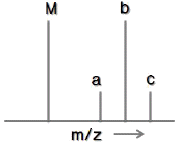
- 피크 a는 큰 피크 M의 위성피크로써, M 피크의 간섭 잡음 때문에 생긴 것이다.
- 피크가 4개인 것은 브로민의 브로민의 동위원소가 4개이기 때문이다.
- 피크 c는 M+3피크라 불린다. 동위원소 중 가장 큰 것들의 기여로 나타난다.
- M과 b의 크기가 같은 것은 탄소와 브로민 중 동위원소인 C13 과 Br81 함량이 각각 1/2씩 되기 때문이다.
(정답률: 69%)
79. 액체크로마토그래피에서 분리효율을 높이고 분리시간을 단축시키기 위해 기울기 용리법(gradient elution)을 사용한다. 이 방법에서는 용매의 어떤 성질을 변화시켜 주는가?
- 극성
- 분자량
- 끓는점
- 녹는점
(정답률: 76%)
80. 0.001M HCl 을 0.1M NaOH 를 사용하여 적정할 때 용액의 비전도도 변화를 가장 잘 나타낸 모식도는?
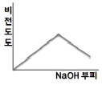
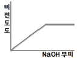
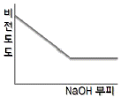
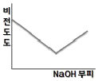
(정답률: 68%)